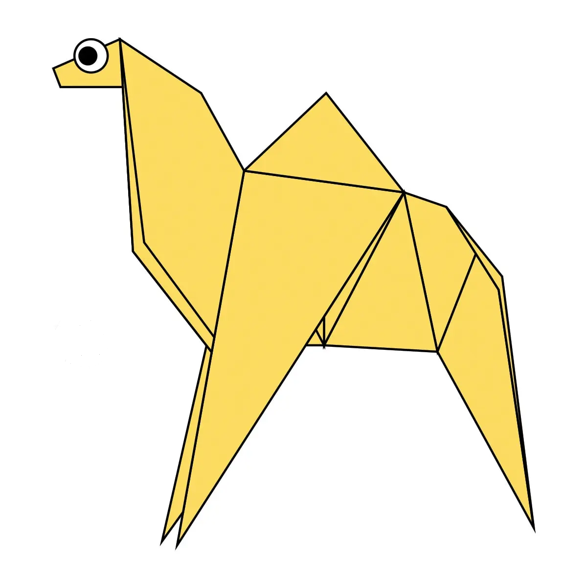
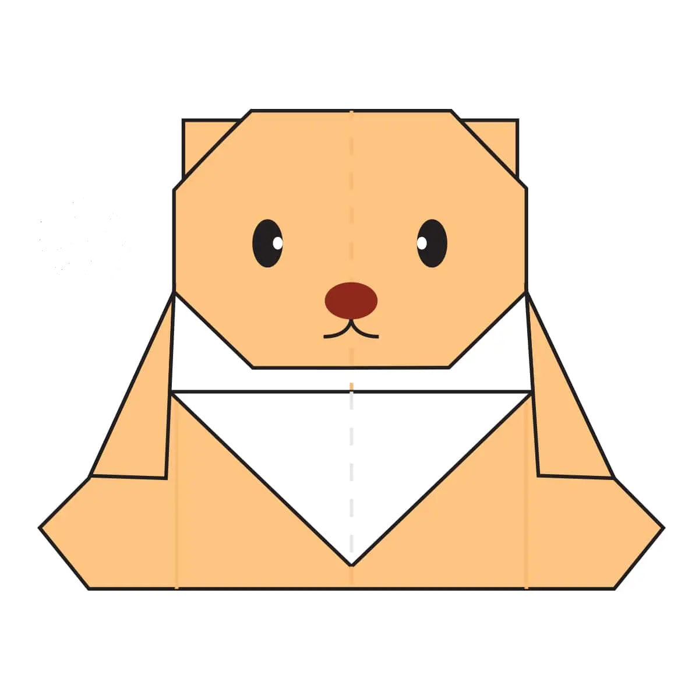

Making a origami Camel
Interesting Facts about Camel
- Camel's ears are furry.
- Camel can easily move across the sand because of its specially designed feet.
- When they find water, they will drink as much as possible.

Making a origami Chameleon
Interesting Facts about Chameleon
- Chameleons are reptiles that are part of the iguana suborder.
- Changing skin color ia an important part of communication among chameleons.
- Most chameleons have a prehensile tail that they use to wrap around tree branches.

Making a origami Pigeon
Interesting Facts about Pigeon
- Pigeons are incredibaly complex and intelligent animals.
- Pigeons are renowned for their outstanding navigational abilities.
- Pigeons have excellent hearing abilities.

Making a origami TeddyBear
Interesting Facts about TeddyBear
- Teddy bears got their name from in 1902.
- The Oxford English Dictionary dates the first use of the term teddy bear to 1906.
- The official term for a teddy bear collector is an ‘arctophile’.
Making a origami Panda
Interesting Facts about Panda
- A giant panda is much bigger than your teddy bear.
- Giant pandas are good at climbing trees and can also swim.
- Pandas go from pink to white and black (or brown).

Making a origami Cicada
Interesting Facts about Cicada
- Cicadas are not locusts and are mostly found in Centeral amd Eastern U.S.
- Cicadas have one of the longest insect lifespans.
- Cicadas inundate forests as a survival mechanism.